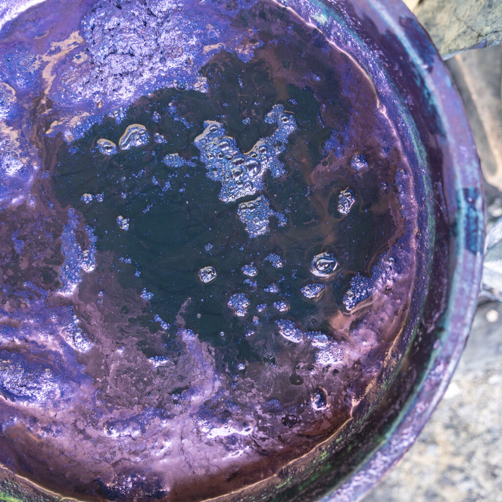
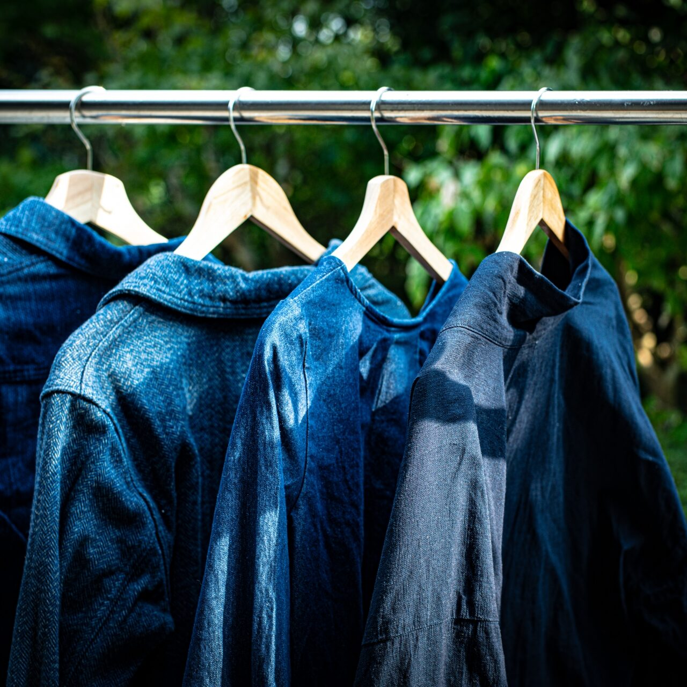
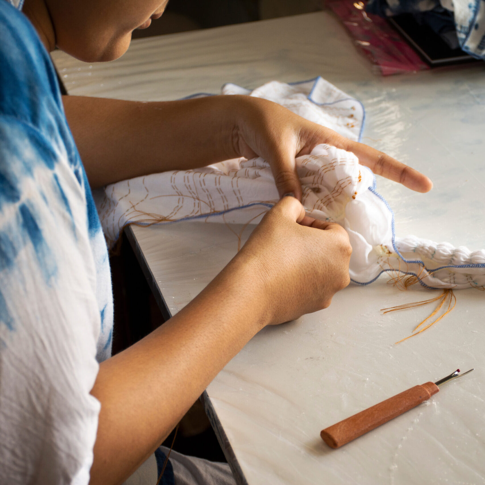
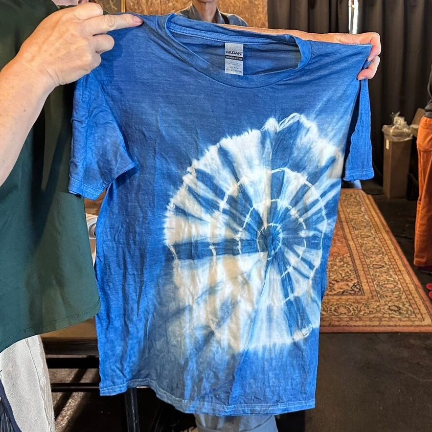
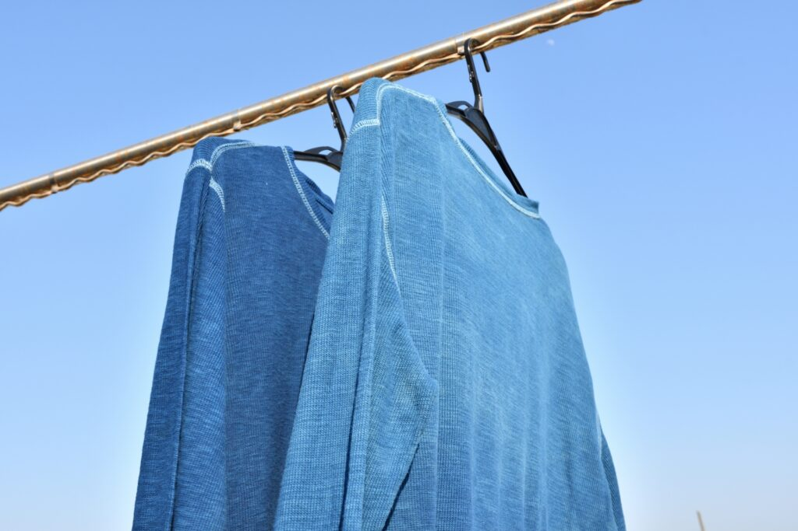
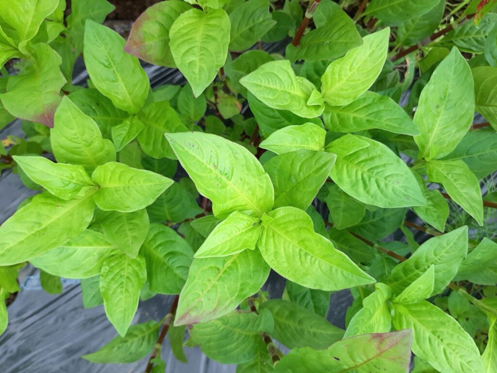
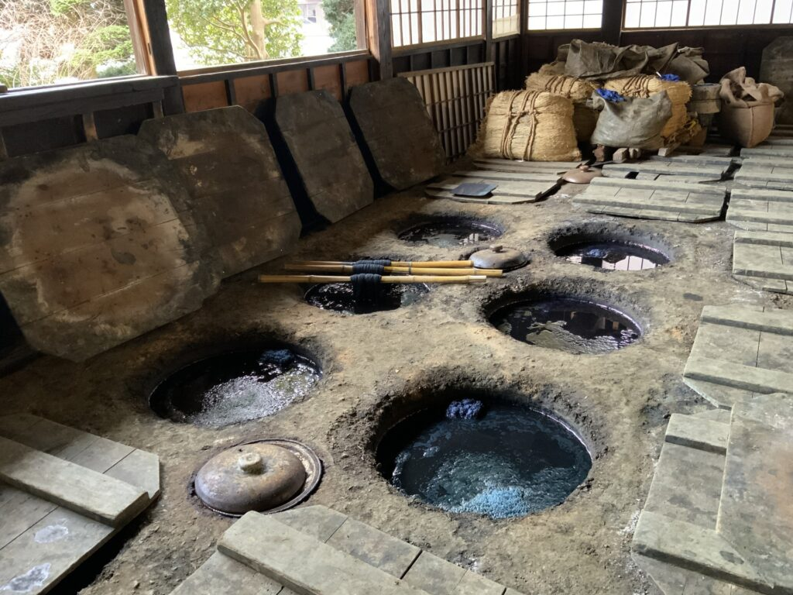

「藍染め」。この古くから伝わる伝統的な染色技術は、その深みのある青色で知られ、世界中で愛され続けています。
藍染めは、自然から得られる藍を使用して布地を染め上げる方法で、特有の美しい色合いと染めあがりが特徴です。このページでは、藍染めの魅力を深く掘り下げてご紹介します。
ページ概要
このページでは、藍染めの世界を深く掘り下げ、藍の特徴から始まり、伝統的な染め方、藍染めが持つ豊かな歴史まで、幅広くご紹介します。藍染めはただの染色技法ではなく、文化や歴史、技術が織りなす芸術です。以下のポイントに沿って、藍染の魅力を順にご説明いたします。

①藍の特徴
藍染めに用いられる藍の植物学的特徴や、染料としての価値を探ります。藍がどのようにしてその美しい青色を生み出すのか、その科学的な側面にも触れます。

②伝統的な染め方
藍染めの基本的な手順と、日本や他の地域で行われてきた様々な染め方を紹介します。絞り、板締め、型染めなど、多様な技法を通じて、藍染めの可能性を探ります。

③藍染の歴史
藍染めがどのようにして発展してきたのか、その起源から現代に至るまでの変遷をたどります。日本だけでなく、世界各地での藍染めの使用と発展についても触れ、文化的な背景を理解します。
さらに、このページの最後では、藍染め体験教室へのご案内もいたします。実際に自分の手で藍染めを体験し、その魅力を直接感じ取ることができる機会を提供します。藍染めの伝統を現代に伝え、新たな創造を生み出すことの喜びを共有したいと考えています。
藍の特徴

藍染めの定義
藍染めとは、自然から採れる藍という植物を原料として作られた染料で、布や糸などを青く染め上げる伝統的な技法です。この染料は、藍の葉を発酵させて作り出され、それを用いて様々な素材に美しい青色を付けます。藍染めは、単に物を青く染めるだけでなく、長い時間をかけて繊細な色合いや模様を作り出すことが可能です。この技術は世界中に広がりを見せており、各地で独自の発展を遂げてきました。
藍染めの特徴と魅力
- 自然由来の染料: 藍染めの最大の特徴は、100%天然の素材から作られる染料を使用している点です。人工的な化学染料と異なり、藍染料は肌に優しく、環境に対する影響も少ないのが特徴です。
- 深みのある色彩: 藍染めで得られる青色は、深みがあり、使い込むほどに風合いが増していきます。時間とともに色が変化していく様子は、藍染めならではの魅力と言えるでしょう。
- ユニークな模様作り: 絞りや型押し、板締めなど、藍染めには布に特別な模様をつけるための様々な技法があります。これらの技術を駆使することで、一点もののアート作品のような染め上がりを実現できます。
- 歴史と文化の継承: 藍染めは数千年にわたって受け継がれてきた歴史ある技術です。それを学ぶことは、単に染色技法を覚えるだけでなく、その土地の文化や伝統に触れることを意味します。
- リラクゼーション効果: 藍染めは、その作業プロセス自体が心を落ち着ける効果があるとも言われています。色が染み込む様子をじっくり観察することで、日常の喧騒から離れてリラックスできる時間を持つことができます。
藍染めの魅力は、その美しい色合いや独特の技法だけでなく、自然への優しさ、歴史と文化の継承、そして作る過程自体に楽しみを見出せる点にあります。誰もがその魅力に触れ、自分だけの特別な作品を作り出す喜びを体験できるのが、藍染めの持つ大きな魅力です。
植物としての「藍」の特徴

藍の植物学的特徴
藍とは、主に熱帯から温帯地域に自生する植物で、特に染料を作るために栽培される種類があります。藍の植物にはいくつか種類がありますが、日本でよく使われるのは「タデアイ」、またはインド原産の「インディゴフェラ・ティンクトリア」などが知られています。これらの藍植物は、細長い葉を持ち、夏には小さな花を咲かせる特徴があります。しかし、藍染めに使用されるのは、その花ではなく、葉から抽出される色素です。
藍から染料を作る流れ
藍染めに使用される染料を作るプロセスは、古来から伝わる伝統的な方法に基づいています。まず、藍の葉を収穫し、それを水に浸して発酵させます。この発酵プロセスによって、葉の中に含まれるインディゴという色素が抽出されます。インディゴはもともと水に溶けにくい性質を持っていますが、発酵させることで溶けやすい形に変化します。
発酵が進むと、液体は青緑色に変わり、この時点で葉を取り除きます。次に、空気に触れさせることで液体内のインディゴが酸化し、水に溶けない形の染料に戻ります。この染料が沈殿するのを待ち、上澄みの液を取り除いた後、染料を乾燥させます。乾燥させたものが藍染めに使われる染料の完成形です。
このプロセスを通じて得られる染料は、深く鮮やかな青色を布や糸に付けることができます。藍染めはこの染料を使って、独特の青色を様々な素材に染め上げていく技術です。
藍から染料を作る過程は、自然の力を借りたシンプルながらも緻密な工程を経ています。このプロセスは、藍染めが持つ環境にやさしい持続可能な技術の一例であり、自然素材から美しい色を引き出す魅力を感じることができるでしょう。
藍染めの歴史

藍染めの起源と発展
藍染めの起源は古く、数千年前に遡ります。最初に藍染めが行われた正確な場所や時期を特定することは難しいですが、古代エジプト、アジア、アフリカなど世界各地で独立して始まったと考えられています。古代の人々は自然界から色素を抽出する方法を発見し、衣服や布に色を加えることで、社会的地位の象徴や美的表現を追求しました。藍染めはその中で、特に美しい青色が得られることから広く採用され、各文化において技術が磨かれていきました。
日本における藍染めの歴史
日本における藍染めは、奈良時代に遡ることができ、それ以来、日本の衣服文化と密接に関わってきました。特に江戸時代になると、藍染めは庶民の間で広く普及し、浴衣や農作業着などの日常着にも使われるようになりました。日本の藍染めは「本藍染」と呼ばれる伝統的な方法で知られており、その独特の美しさは高い評価を受けています。また、藍染めは「防虫効果」や「防腐効果」があるとも言われ、実用性の高さも古くから人々に重宝されてきました。
世界各地での藍染めの使われ方
藍染めは世界各地で異なる文化を反映した形で発展してきました。アフリカの国々では、独特の模様を用いた藍染めが伝統的な衣装や装飾品に使われており、その模様にはしばしば特別な意味が込められています。インドでは、「インディゴ」として知られる藍染めが古代から栄え、欧州への輸出も盛んに行われました。これは、のちの「インディゴ革命」へと繋がり、世界中の染色技術に大きな影響を与えました。また、アメリカでは、藍染めのデニムがアイコニックなファッションアイテムとして世界中に広まりました。
藍染めは、その歴史の中で多様な文化と結びつきながら発展してきました。それぞれの地域で異なる技法や意味を持ち、今日でもその伝統は大切にされ、新しい創造へと繋がっています。藍染めはただの染色技法ではなく、人類の文化や歴史、技術の進歩を映し出す鏡のような存在です。
伝統的な染め方
藍染めの基本的な手順
藍染めは、布や糸に自然由来の美しい青色を付ける伝統的な技法です。基本的な手順はシンプルで、次のように進めます。
- 素材の準備: 染める布や糸は、まず水洗いして油分や不純物を取り除きます。これにより染料が均等に染み込むようになります。
- 染料の準備: 藍染料を水に溶かして染め液を作ります。この染め液は、藍の葉から抽出した色素を含む発酵液で、特有の青色を生み出します。
- 染色: 準備した素材を染め液に浸します。全体に液が行き渡るように動かしながら、希望の色の濃さに応じて染め時間を調整します。
- 酸化と色の定着: 素材を染め液から取り出し、空気に触れさせることで酸化させます。これにより、藍の青色が素材に定着します。
- 洗浄と乾燥: 染めた素材を水でよく洗い、余分な染料を落とした後、自然乾燥させます。
様々な藍染め技法（絞り染め、板締め染めなど）
- 絞り染め: 布を特定のパターンで絞り、縛った状態で染めます。解いた後に現れる模様が特徴的です。
- 板締め染め: 布に木製の板を挟み、縛って染める技法です。板の形状や配置によって異なる模様が生まれます。
- 型染め: 型紙を用いて染料を抑える部分と染める部分を制御し、複雑なデザインを表現します。
家でできる簡単な藍染め方法
家庭で藍染めを楽しむためには、染料の準備から始めます。市販の藍染めキットを使用すると、手軽に始められます。基本的な流れは以下の通りです。
- キットの指示に従って染め液を準備: 多くのキットには藍の粉末染料が含まれており、水に溶かして使用します。
- 染めたいアイテムを準備: Tシャツや手ぬぐいなど、染めたい布製品を用意し、水で濡らしてから絞ります。
- 染色: 準備した染め液に布を浸し、所定の時間染めます。色の濃さは浸す時間で調整できます。
- 乾燥: 染め上がった布を取り出し、よく水洗いした後、陰干しで乾燥させます。
家での藍染めは、簡単に始められる趣味の一つで、オリジナルのアイテム作りを楽しむことができます。キットを使えば、初心者でも安全に、かつ綺麗に染め上げることが可能です。自分だけの特別な藍染めアイテムを作ってみましょう。
藍染体験教室Art Cycleのご案内

藍染めの魅力を体験してみませんか？河口湖の自然に囲まれた藍染専門の染物体験教室「Art Cycle」では、誰でも簡単に楽しめる藍染体験を提供しています。古来からの伝統技術を学び、オリジナルの藍染Tシャツを作ることができます。家族や友人と特別な思い出を作りたい方、自分だけの一点物を持ちたい方にぴったり。自然がもたらす美しさを体験しに、ぜひお越しください。